Alternaистория из переписки
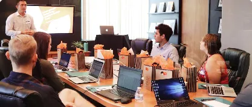
Пишет мне ученица. Учит турецкий восемь месяцев. Работает в Стамбуле, в офисе.
Говорит, хотела позвать коллегу на созвон. Сказать ему: хочу, чтобы ты пришёл.
Говорю, сказала? Говорит, сказала.
1 / 3
Когда okumak, когда okuma, когда okuduğum. Учебники объясняют это размыто. Тут без тумана: четыре формы, одно правило и двенадцать упражнений.
00 История

Пишет мне ученица. Учит турецкий восемь месяцев. Работает в Стамбуле, в офисе.
Говорит, хотела позвать коллегу на созвон. Сказать ему: хочу, чтобы ты пришёл.
Говорю, сказала? Говорит, сказала.
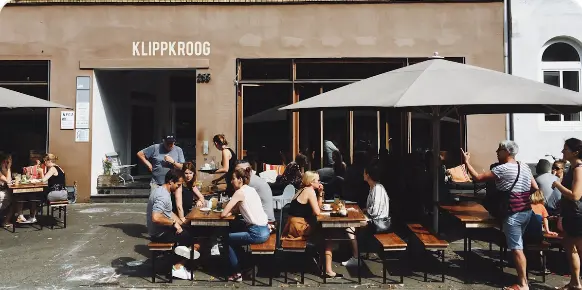
Говорю, как? Говорит, Ben istiyorum sen gel
Коллега посмотрел на неё. Потом в окно. Потом опять на неё.
Пришёл. Через сорок минут. С двумя стаканами чая. Сказал, раз ты так настаиваешь.
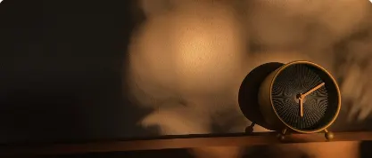
Говорю, надо было Gelmeni istiyorum Два слова вместо четырёх.
Говорит, а это в учебнике где? Говорю, в главе про -ma. Там две строчки и таблица.
Таблицу пропускают все. Созвон, кстати, перенесли.
Ниже та самая таблица. Только понятная.
Четыре формы одного глагола
02Где русский берёт слово, турецкий берёт хвост
03Корень, аффикс, гармония, согласные
04Факт или желание. Четыре вопроса
05Восемь карточек, переверни и проверь
06Dondurma, giriş и прочие хитрости
07Всё правило на одной карточке
0812 заданий с разбором ответа
01 Что это
Берём глагол okumak, читать. Турок может превратить его в четыре разных слова. Каждое со своей работой. Нажми на карточку.
Ничьё. Без хозяина. Так глагол стоит в словаре. Работает, когда неважно, кто делает, или делаешь ты сам.
К нему можно прицепить моё, твоё, его и падеж. Нужна, когда действие хотят, просят или оно кому-то надо.
Не сам факт, а то, как человек это делает. Плюс куча готовых слов: вход, выход, прогулка.
То, что уже случилось или происходит. И всё, что по-русски начинается со слов "который" и "что".
02 Зачем нужно
В русском у "читать" одна форма. Всю работу делают слова вокруг: чтобы, что, который, как. В турецком таких слов почти нет. Их работу делает хвост глагола.
Порядок слов SOV: глагол в самом конце. Жми "дальше".
Обычная русская фраза. Шесть слов. Смотрим, сколько останется в турецком.
Турция вокруг тебя
Эти формы висят на табличках, стоят в меню и звучат в метро. Нажми на фото, чтобы услышать.
03 Как образуется
Турецкое слово собирается как поезд: корень, потом вагоны. Выбери глагол и форму. Блоки приедут по очереди, а внизу будет написано, почему каждый выглядит именно так.
Глагол
Форма
Смотрим на последнюю гласную корня. Она решает, какой вариант аффикса встанет.
Четыре замены. Без них слово выходит, но звучит как с акцентом. Буквы ниже меняются сами.
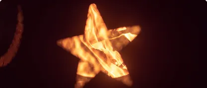
04 Как выбрать форму
Главный вопрос тут не про грамматику. Он про жизнь. Это уже случилось или случается? Тогда -dık. Это только хотят, просят, надо? Тогда -ma. Выбери фразу, и схема пройдёт по ней сама.
Русская фраза
Книга, которую я читал
У -dık нет разницы между "читал" и "читаю". Это решает контекст. Будущее отдельно: -acak.
05 Где ошибаются русскоязычные
Слева то, что хочется сказать по русской логике. Нажми, чтобы перевернуть и увидеть, как сказал бы турок.
06 Исключения и подводные камни
Правило работает в девяти случаях из десяти. Вот десятый. Открывай строки по одной.
| sevmek любить | -mayı | Okumayı seviyorum. | |
| unutmak забыть | -mayı | Kapıyı kapatmayı unuttum. | |
| bilmek уметь | -mayı | Yüzmeyi bilmiyorum. | |
| bırakmak бросить | -mayı | Sigara içmeyi bıraktım. | |
| başlamak начать | -maya | Türkçe öğrenmeye başladım. | |
| çalışmak стараться | -maya | Türkçe konuşmaya çalışıyorum. | |
| istemek хотеть | -mak / -manı | Gitmek istiyorum. Gitmeni istiyorum. |
Хочу сам: -mak. Хочу, чтобы другой: -ma + чей + падеж.
На письме различает контекст. Рядом с существительным путаницы нет: okuma kitabı, книга для чтения.
Их просто учат как слова. Правило объясняет, откуда они взялись.
Нужен хозяин? Меняй -mak на -ma: не okumakım, а okumam.
Если "который" сам делает действие, нужен -an. -dık для всего остального.
Так же yiyecek (еда) и gelecek (будущее). Решает место в предложении.
07 Итог
Всё правилона одном билете
Okumak istiyorum. Без хозяина, словарная форма.
Okumanı istiyorum. Хотят, просят, надо, любят.
Okuduğunu biliyorum. Знаю, вижу, который.
Okuyacağım kitap. Факт, который ещё будет.
Okuyuşu güzel. Как именно человек делает.
okuduğum, yaptığım, gidiş, okuyuş.
08 Упражнения
Двенадцать заданий шести типов. Ответ проверяется сразу, и под ним разбор: почему так, а не иначе.
09 Это была одна тема
Эту страницу ты прочитал минут за десять. Может, за пятнадцать, если делал упражнения.
Правило теперь понятно. Gelmeni istiyorum Geldiğini biliyorum
А потом открываешь рот в разговоре. И аффиксы разбегаются. -ma, -dık, -acak. Кто куда.
Это нормально. Понять правило и говорить по нему это два разных навыка. Второй тренируют. На примерах, на упражнениях, на одной теме за другой.
Только учебники обычно объясняют турецкий через английский. Или сразу через турецкий. Сначала переводишь объяснение, потом пример. На сам турецкий сил не остаётся.
Поэтому я разобрал турецкий через русский. Так, как на этой странице. Не одну тему. Все.
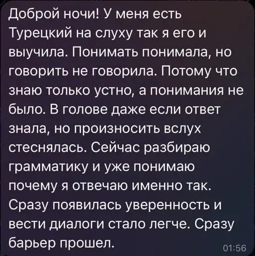
Понимать понимала, а говорить не говорила. Это написала ученица. Дальше в её сообщении: разбираю грамматику и уже понимаю, почему я отвечаю именно так.
Так выглядит гайд по грамматике на платформе: правило, схема, тренажёр
58 для A1-A2 и 70 для B1-C1. Разобраны как на канале.
Не список слов, а то, что реально говорят.
Слова, тексты, диалоги, аудирование, игры на запоминание.
A1, A2, B1, B2, C1. По каждому отдельно.
Для тех, кто ищет работу или уже работает.
Фильмы, книги, мультфильмы, подкасты, приложения, YouTube.
Настоящие скриншоты. Платформа живёт в Notion: открывается с телефона и с ноутбука. Нажми на скриншот, чтобы рассмотреть.
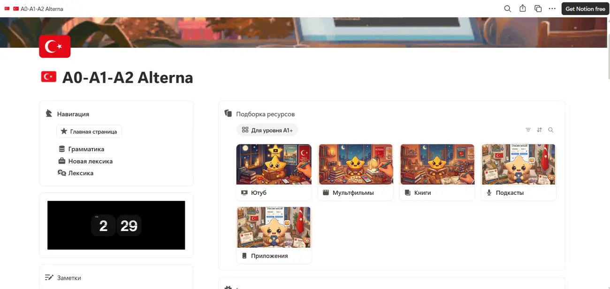
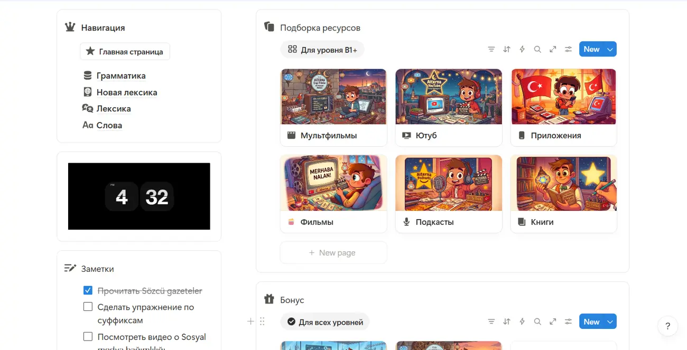
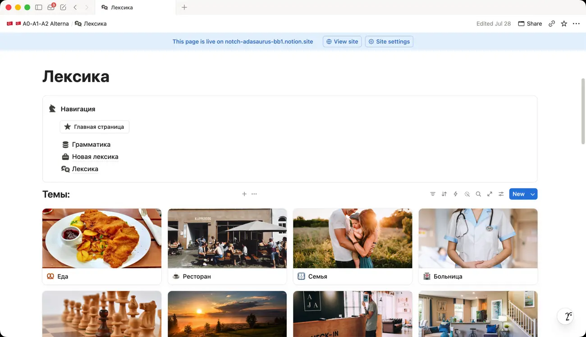
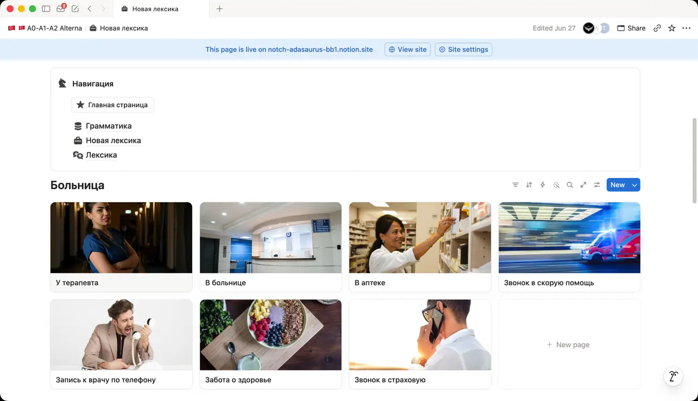
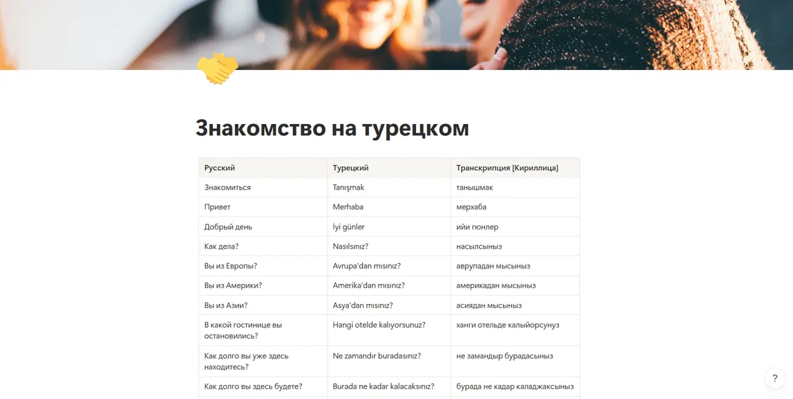
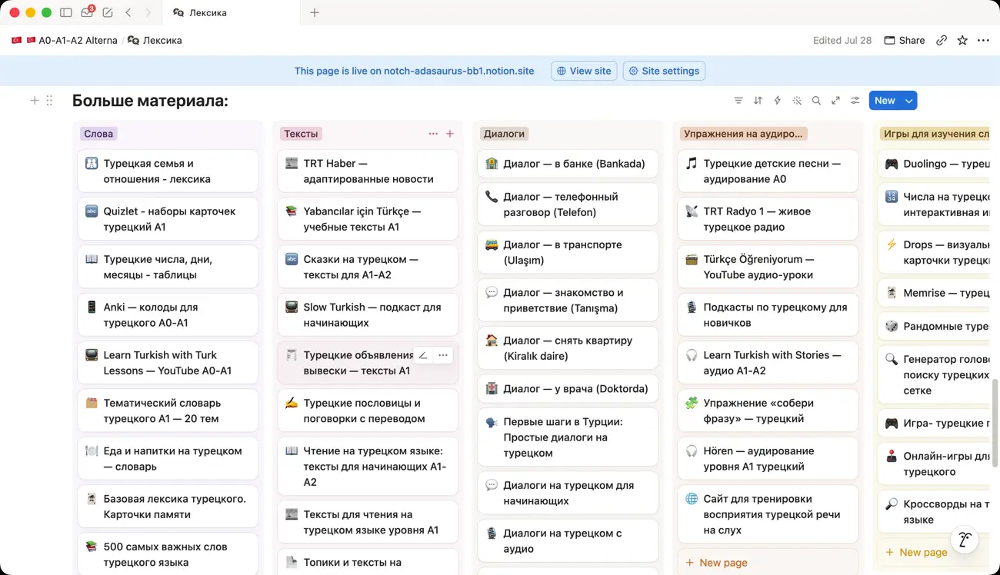
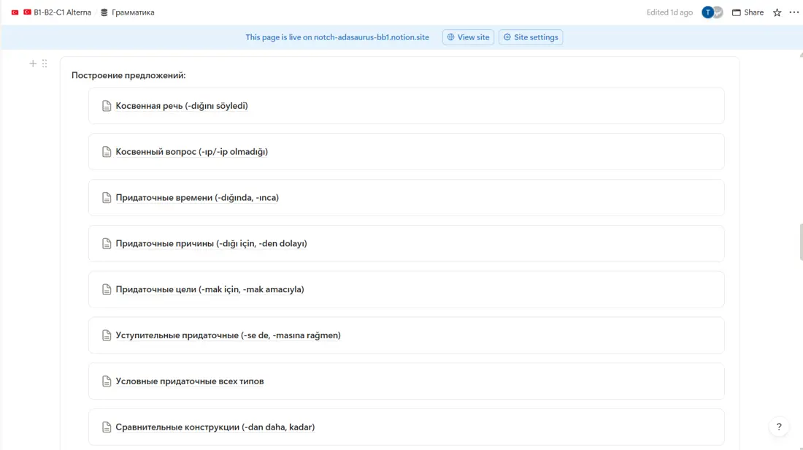
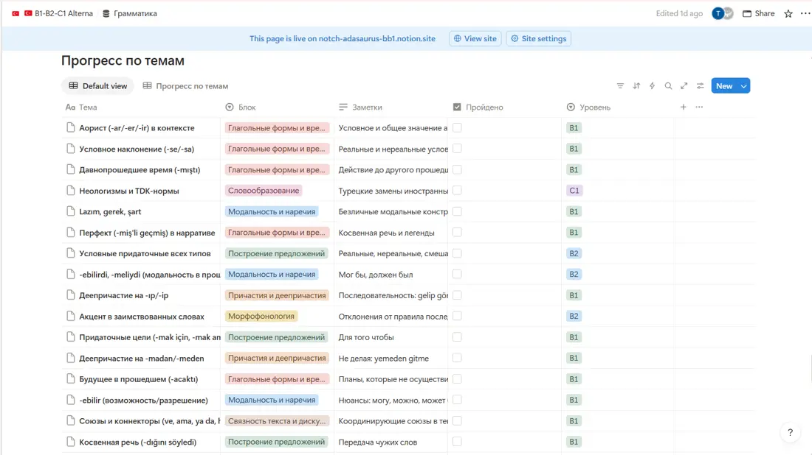
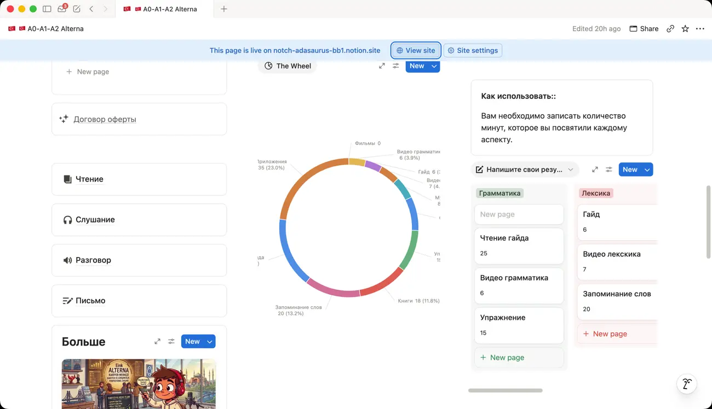
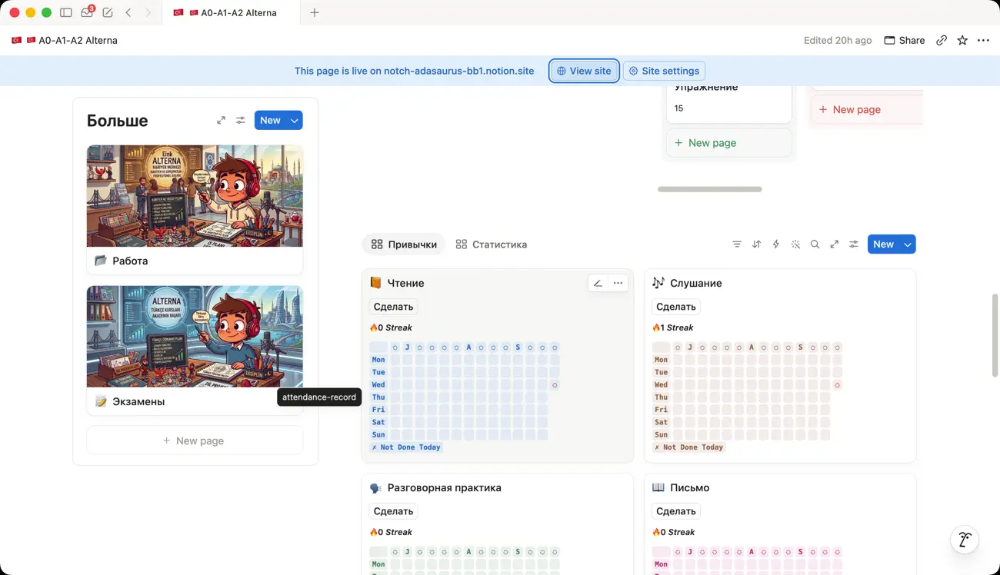
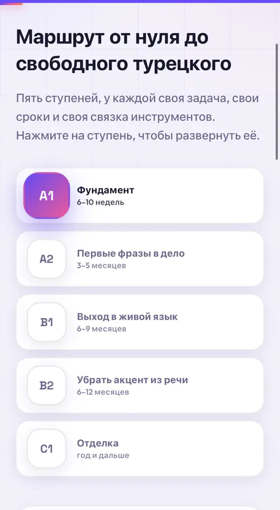
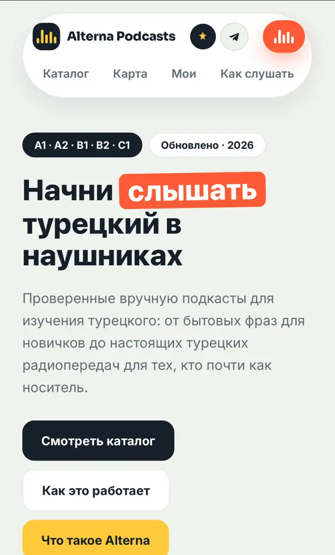
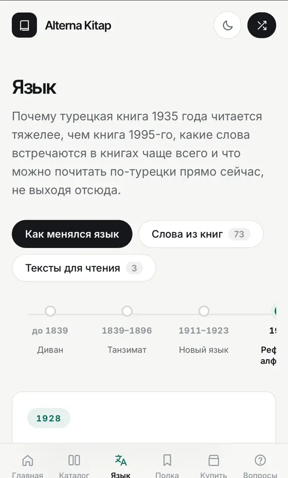
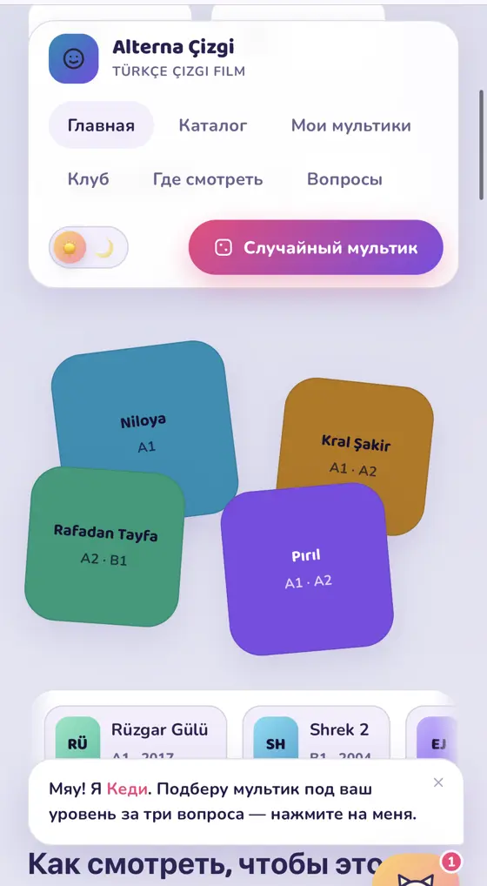
Приложения и сервисы, разложенные по уровням
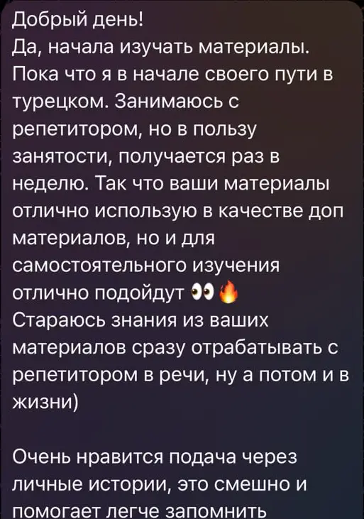
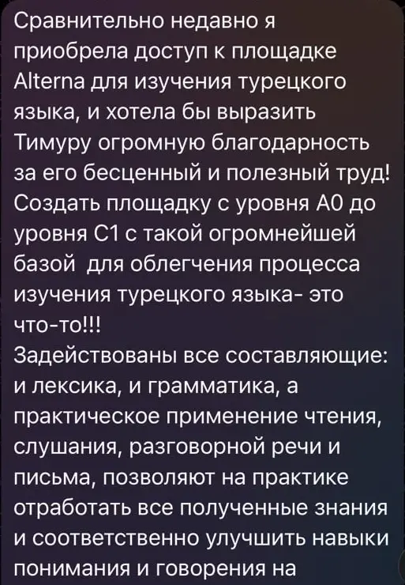
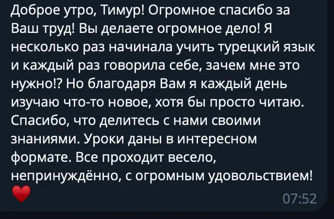
Твой билетв турецкий
Тридцать долларов. Один раз. Доступ навсегда. Коллега из истории, кстати, теперь приходит на созвоны вовремя.